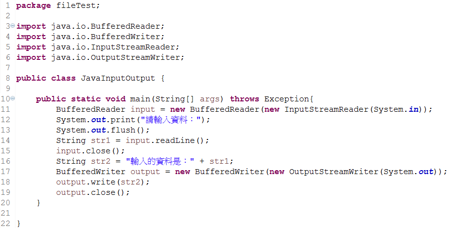
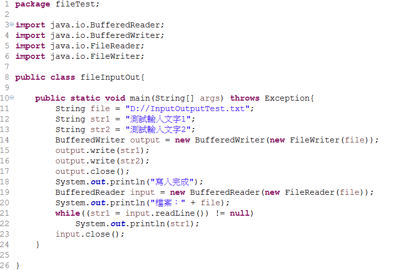
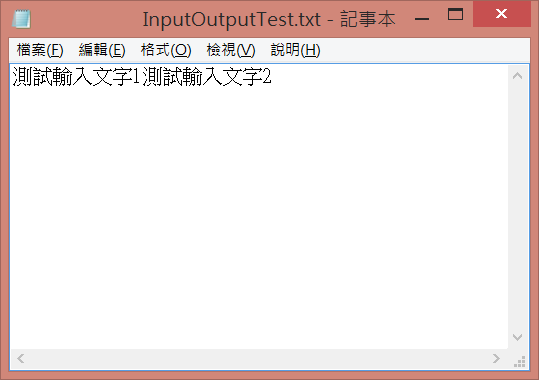

.

檔案處理
java的輸入輸出串流：
輸出
BufferedWriter output = new BufferedWriter(new OutputStreamWriter(System.out));
| 方法型態 |
方法 |
說明 |
| void |
write(String) |
寫入一個字串 |
| void |
flush() |
清除串流內容 |
| void |
close() |
關閉串流 |
輸入
BufferedReader input = new BufferedReader(new InputStreamReader(System.in));
| 方法型態 |
方法 |
說明 |
| String |
readLine() |
讀取一行文字內容的字串 |
| void |
close() |
關閉串流 |
範例：
java的輸入/輸出串流（功能類似Scanner）

輸出：
- 初始文字
請輸入資料：
- 輸入資料「123」
請輸入資料：123
輸入的資料是：123
檔案的讀取與寫入

輸出：
- 文字
寫入完成
檔案：D://InputOutputTest.txt
測試輸入文字1測試輸入文字2
- D://InputOutputTest.txt
